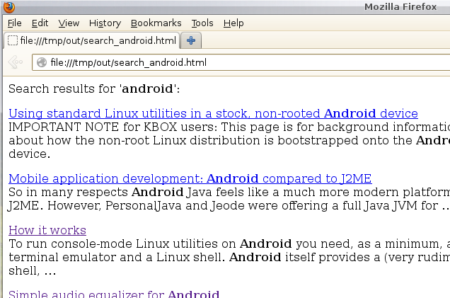

Using Apache Camel to automate a Google custom search
The article follows on from my previous article Creating an Apache Camel route in Java using Maven,
step by step. Here I continue to use Maven as the build engine,
but with a somewhat more interesting application of Camel:
to automate the invocation of a custom Google search, and format the
results as an HTML page. The camel route takes a search term as an
argument, and produces an HTML page of search results something
like this:

An application like this could be used, for example, to maintain an
index of particular keywords across a number of specific Web sites
(including your own, if it is exposed to Google's search robots).
The example demonstrates the following Camel features:
Using the http component to invoke REST-type Web services
Conversion of JSON data structures to XML
Extraction of data elements from XML using XPath expressions
Splitting an XML document into pieces based on an XPath expression,
and re-aggregating the results in a different format
The example has been tested using Camel 2.13.0 -- it definitely won't work with
earlier versions without modification, because this version adds support for
the xpath() method to return a String directly,
without explicit conversion. In this article, I assume some familiarity
with Camel, and building projects using Maven. Some understanding of
XML and of the HTTP protocol would be helpful.
As always, full source code is available -- see the Download section
at the end of the article.
About the custom Google search API
A Google custom search executes a Web search for particular terms across a
particular set of Web sites. Because it is exposed as a public API, it
can be used in a programmatic way to automate and cache sets of search results.
The custom search API is well-documented, so I'm only going to explain
in outline how to set it up.
To use the Google custom search API in a program, you need an 'API ID'
(also called an 'API key')
and a reference to your specific custom search engine, generally
referred to as a 'cx' reference. To get an API ID,
you should log into the Google
Developer's Console here
and create
a new project. You will probably need to register to use this service.
Enable the project for 'custom search API', and then
create a new search engine definition here.
Because the API key and the cx reference are sort-of
secret, I'm not using mine in the sample program. Instead, the
program will read a file called camelgooglesearch.props
in the user home directory, and look for these two pieces of information
there. The file should look like this:
key={a long string}
cx={another long string}
In the usual style or REST Web Services, the Google custom search is
invoked with the arguments as part of the URI. The format
is as follows:
Note that the request must be made as an HTTP get -- Google's servers
reject a POST, even if the URI is correct. This is slightly inconvenient,
because Camel will default to using a POST request if there is anything
in the current message body (because it thinks there is data to be
pushed to the server). More on this point later.
@notebox(Use of Google's custom search API is free of charge for small volumes, but there is a quota of 100 requests per day. You'll exceed that quota in a second if your Camel route runs amok and hammers Google's servers.)
Although some of Google's public APIs return data in XML format, the
customer search (so far as I know) only returns JSON. This is a
kind of object graph that is popular with JavaScript programmers, because
the data can be read directly into a JavaScript data structure.
Here is a sample of the JSON data returned (there is a full
sample in the source code bundle):
Camel can deserialize this ugly data format into a Java object, but here's
the problem: 90% of it is unuseful for this application. To convert
it to Java requires defining Java beans with a full set of attributes
that match the data types of the JSON structure and, as this structure
is complex and deeply-nested, that's a lot of Java code.
So the approach I've taken in this article is to convert the whole
data structure into XML. In this format, the data can be
manipulated using XPath expressions, and the unhelpful data simply
ignored.
The built-in conversion produces, by default, an XML document in which
the parts of the JSON structure the are anonymous get assigned
generic names like <o> and <e>.
There probably is a systematic way to figure out exactly how
Camel will transform JSON into XML but, in my view, it's easier just
to let it do it, and examine the results. In the present case,
the XML document that results from transforming Google's search
results has the following basic structure:
...
Yadda, yadda, yadda...
Page title
http://someplace...
...
There is a great deal more information in the document, but the elements
shown are all that we need to build up a search results page.
All the useful information is in the items element,
and there is one <e> for each search result.
You might find it helpful to refer back to this XML snippet when
looking at the Camel route definition below.
Developing the Camel route
The core of the application is in the class MainApp where
the route is defined. The route definition looks like this:
final String searchTerm = args[0];
camelContext.addRoutes (new RouteBuilder()
{
public void configure()
{
String outputFile = "search_" + searchTerm + ".html";
from ("direct:start")
// Force HTTP request to GET, because Google will reject a POST
.setHeader (Exchange.HTTP_METHOD, constant("GET"))
// Note that we must encode the searchTerm, as it will form
// part of a URL. So convert spaces the '+', etc.
.to ("https://www.googleapis.com/customsearch/v1"
+ "?q=" + URLEncoder.encode (searchTerm)
+ "&key=" + key
+ "&cx=" + cx)
// The message body now contains the response from the HTTP
// request, which is in JSON format (thanks, Google),
// so we convert it into a generic XML document...
.unmarshal().xmljson()
// And then split the XML into pieces matching
// Our Aggregator will be called once for each piece split
// from the XML
.split (xpath("//o/items/e"), new Aggregator())
// Note we need 2.13.0 for the following to work
// Between here and the following end(), we are working on
// each chunk in the split XML file individually
// Use XPath expressions to extract the bits from the XML
// that we are interested in, and put them in headers.
// These will be used by the aggretator to build up the page
.setHeader ("link", xpath ("//link", java.lang.String.class))
.setHeader ("title", xpath ("//htmlTitle", java.lang.String.class))
.setHeader ("snippet", xpath ("//htmlSnippet",
java.lang.String.class))
// Set body to empty, because otherwise the aggregate will
// begin with the original XML
.setBody (constant(""))
// The end() here marks the end of the split-aggregate operation.
// Beyond this point, we are working on the aggretated result.
.end()
// At this point, the message body contains the aggregate
// page of search results. Replace the body ('enrich' is the
// trendy EIP term) by adding a simple title to the page
.setBody (simple ("Search results for '" + searchTerm
+ "': ${body}"))
// Write the message body out to a file, whose name is
// based on the search term
.to("file:" + outputDirectory + "?fileName=" + outputFile)
// Finally, call setDone() to tell the program we are
// finished
.process (new Processor ()
{
public void process (Exchange ex)
{
setDone();
}
}
);
}
});
I hope that, with all the comments, the code is reasonably self-explanatory,
but a few additional comments might be useful.
We set the message header HTTP_METHOD explicitly to GET.
If there is any message body, Camel will POST it to the server, which
causes an error in this case. The Camel documentation says that if the
message body is null, a GET is used; but I found that
this just caused it to throw a NullPointerException.
The direct endpoint is used for specific, one-time activation
of a route. Any name can be used with direct, but it's
customary to use start in situations where the
route is being set off explicitly by the program, as it is in this
case. To activate the direct:start consumer, we post
a message to it like this:
The second argument to sendBody() becomes the message
body at the start of the route, but we don't have any message
at this point, so it is left empty.
Having got the response from the server, and converted it to XML,
the bulk of the work takes place between split() and
end(). What we're doing here is splitting the XML
document up into individual search results, processing each one,
and then aggregating the results back into a single page, but formatted
in HTML. Readers familiar with this sort of operation might recognize
this as the sort of operation that might usefully be carried out using
an XSLT stylesheet, and that is indeed the case. However, doing it this
way does allow for some extra flexibility in who the individual chunks
of the document are processed (not that we need that flexibility in this
simple example).
Camel does have a specific aggregator component, but that is really
designed for building composite messages from fragments that may
arrive out of sequence, and where the completion criteria may be
complex. In this example, we're splitting up one document and
recombining it, so it's a lot easier to use the aggregation facility
built into split() than to use the aggregator.
Everything between split() and end()
is executed for
each fragment of the message body (in this case, the XML document)
that is split out, with the final aggregation carried out by
the customAggregator class (see below). For
each fragment we use XPath expressions to extract the necessary
data, and store it in message headers (so they can be read by the
aggregator). The fragments are defined by sections of XML that
match the XPath expression //o/items/e. Refering to
the XML snippet above, we can see that each fragment split out will
have the form:
Yadda, yadda, yadda...
Page title
http://someplace...
Thus, to match the link element, we need the XPath
expression //link, and not//o/items/e/link,
as it might first seem.
Before calling end(), we do setBody (constant(""))
because there is already something in the message body -- the XML
document fragment. This message is of no use in this application, since
we've put all the relevant data into message headers; without setting
the body empty, the XML fragments would be merged in with the HTML code
generated by the aggregator.
The result of the aggregation will be a new message body consisting of
the search results formatted as HTML. We finish by adding a simple
title to this HTML, and then writing it to file.
The aggregator looks like this:
class Aggregator implements AggregationStrategy
{
public Exchange aggregate (Exchange oldEx, Exchange newEx)
{
if (oldEx == null) return newEx;
// Get the relevant data from the message header. Note that
// the message body contains the data that is being built up
// by the aggregation process
String link = (String) newEx.getIn().getHeader ("link");
String title = (String) newEx.getIn().getHeader ("title");
String snippet = (String) newEx.getIn().getHeader ("snippet");
// Get the existing message body...
String existing = oldEx.getIn().getBody (String.class);
// ... and append to it the new search result ...
String newBody = existing +
"" + title + "" + " " +
snippet + "\n";
// ... then replace the old message body with the extended version
// containing the new formatted search result
oldEx.getIn().setBody (newBody);
return oldEx;
}
}
What the aggregator does is to take the message body in its current
for (as discussed above, it is initially empty) and add to it
a block of HTML code, derived from the search result data that was
placed into message headers by the Camel route.
Building and testing the route
To build the application from source code, just run
% mvn compile
If you look in the pom.xml file, you'll see the specific
dependencies that this application has. Obviously there is a dependency
on camel-core, but we also need camel-xmljson
for the JSON-XML transformation support, and camel-http
for the HTTP/S endpoint.
To run the application, you must first create a camelgooglesearch.props file containing your App ID and cx reference, as described earlier
in this article. The application looks for it in you home directory but,
obviously, you can change this in the source if it is inconvenient. You
may also prefer to change the output directory, if writing the results
to /tmp/out doesn't suit you.
The problem takes a search term on the command line, so this must be specified
as an argument to the Maven command line, like this:
% mvn -q exec:java -Dexec.args="my_search_term"
The output file will, by default,
be /tmp/out/search_my_search_term.html.
Discussion
The purpose of this article was to demonstrate some interesting features
of Camel, and not necessarily to illustrate the best way to use the
Google custom search API. In fact, Google provides Java-based libraries
to use with its public APIs. In my view, processing the data programmatically
isn't necessarily any harder to learn how to do, than learning how to use
Google's libraries; however, by using the libraries the developer is,
to some extent, protected from changes to the data format that Google
might make in the future.
As I intimated earlier, XMl-to-HTML transformation is the archetypal
application of XSLT stylesheet transformation. In an application like
this XSLT transformation is both natural and efficient. There is a
bit of a learning burden associate with getting started with XSLT,
but it's no harder than learning to use Camel. You'd still have to
implement the code to fetch the results from Google, and write the
HTML out to a file, which is something that Camel provides
for free, so to speak.
You may have noticed that my simple Camel route has no error handling.
System-level error like failing to connect to the server are
handling by Camel and the JVM automatically, but the developer still
really ought to deal with reporting errors at the level of
Google's API. For example, if the user's daily quota has expired,
you'll still get a response from Google in the form of a JSON
structure, and it will still be transformable into XML, but
it won't split with the XPath expression used, and the result
will be a search results page full of apparent gibberish. This
situation can certainly be handled by Camel, but the error handling
would add more code to the route that the whole of the rest of the
processing (but isn't that so often the case?)
Summary
Although it's an unsual application of Camel, This
situation can certainly be handled by Camel, but the error handling
would add more code to the route that the whole of the rest of the
processing (but isn't that so often the case?)I hope this article has
demonstrated features of the software which are generally applicable,
such as XML processing and access to REST-based Web services.
For another example of using Camel in an unconventional way, see my
article
Using Camel as a filesystem indexing tool.